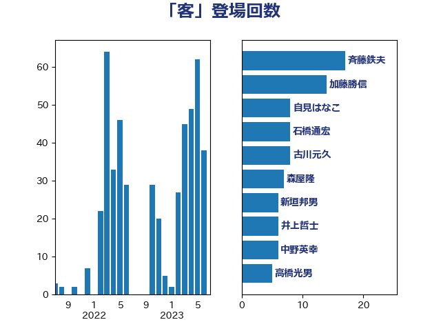

単語「客」

| 斉藤鉄夫 | 公明党 | 17 回 |
| 加藤勝信 | 自由民主党 | 14 回 |
| 自見はなこ | 自由民主党 | 8 回 |
| 石橋通宏 | 立憲民主党 | 8 回 |
| 古川元久 | 国民民主党 | 8 回 |
| 森屋隆 | 立憲民主党 | 7 回 |
| 新垣邦男 | 立憲民主党 | 6 回 |
| 井上哲士 | 日本共産党 | 6 回 |
| 中野英幸 | 自由民主党 | 6 回 |
| 高橋光男 | 公明党 | 5 回 |
| 須藤元気 | 無所属 | 5 回 |
| 神田潤一 | 自由民主党 | 5 回 |
| 田中健 | 国民民主党 | 5 回 |
| 小宮山泰子 | 立憲民主党 | 5 回 |
| 吉井章 | 自由民主党 | 5 回 |
| 上田勇 | 公明党 | 5 回 |
| 青山繁晴 | 自由民主党 | 4 回 |
| 長谷川岳 | 自由民主党 | 4 回 |
| 金子恵美 | 立憲民主党 | 4 回 |
| 野村哲郎 | 自由民主党 | 4 回 |
| 遠藤良太 | 日本維新の会 | 4 回 |
| 芳賀道也 | 国民民主党 | 4 回 |
| 田名部匡代 | 立憲民主党 | 4 回 |
| 清水貴之 | 日本維新の会 | 4 回 |
| 比嘉奈津美 | 自由民主党 | 4 回 |
| 庄子賢一 | 公明党 | 4 回 |
| 山本博司 | 公明党 | 4 回 |
| 宮本徹 | 日本共産党 | 4 回 |
| 和田政宗 | 自由民主党 | 4 回 |
| 勝目康 | 自由民主党 | 4 回 |
| たがや亮 | れいわ新選組 | 4 回 |
| 高橋千鶴子 | 日本共産党 | 3 回 |
| 野田聖子 | 自由民主党 | 3 回 |
| 西銘恒三郎 | 自由民主党 | 3 回 |
| 西村康稔 | 自由民主党 | 3 回 |
| 藤井一博 | 自由民主党 | 3 回 |
| 葉梨康弘 | 自由民主党 | 3 回 |
| 竹内真二 | 公明党 | 3 回 |
| 福島伸享 | 無所属 | 3 回 |
| 礒崎哲史 | 国民民主党 | 3 回 |
| 石原正敬 | 自由民主党 | 3 回 |
| 浜口誠 | 国民民主党 | 3 回 |
| 池下卓 | 日本維新の会 | 3 回 |
| 横沢高徳 | 立憲民主党 | 3 回 |
| 枝野幸男 | 立憲民主党 | 3 回 |
| 岡田直樹 | 自由民主党 | 3 回 |
| 天畠大輔 | れいわ新選組 | 3 回 |
| 伊波洋一 | 無所属 | 3 回 |
| 中島克仁 | 立憲民主党 | 3 回 |
| 上杉謙太郎 | 自由民主党 | 3 回 |
| 三宅伸吾 | 自由民主党 | 3 回 |
| 青山大人 | 立憲民主党 | 2 回 |
| 長浜博行 | 無所属 | 2 回 |
| 鈴木敦 | 国民民主党 | 2 回 |
| 野田佳彦 | 立憲民主党 | 2 回 |
| 逢坂誠二 | 立憲民主党 | 2 回 |
| 谷田川元 | 立憲民主党 | 2 回 |
| 美延映夫 | 日本維新の会 | 2 回 |
| 石川香織 | 立憲民主党 | 2 回 |
| 石原宏高 | 自由民主党 | 2 回 |
| 石井浩郎 | 自由民主党 | 2 回 |
| 石井正弘 | 自由民主党 | 2 回 |
| 田村まみ | 国民民主党 | 2 回 |
| 玉木雄一郎 | 国民民主党 | 2 回 |
| 牧原秀樹 | 自由民主党 | 2 回 |
| 熊谷裕人 | 立憲民主党 | 2 回 |
| 津島淳 | 自由民主党 | 2 回 |
| 泉田裕彦 | 自由民主党 | 2 回 |
| 横山信一 | 公明党 | 2 回 |
| 梅谷守 | 立憲民主党 | 2 回 |
| 松川るい | 自由民主党 | 2 回 |
| 東国幹 | 自由民主党 | 2 回 |
| 杉田水脈 | 自由民主党 | 2 回 |
| 末松信介 | 自由民主党 | 2 回 |
| 朝日健太郎 | 自由民主党 | 2 回 |
| 岬麻紀 | 日本維新の会 | 2 回 |
| 寺田静 | 無所属 | 2 回 |
| 寺田学 | 立憲民主党 | 2 回 |
| 室井邦彦 | 日本維新の会 | 2 回 |
| 國場幸之助 | 自由民主党 | 2 回 |
| 古屋範子 | 公明党 | 2 回 |
| 勝部賢志 | 立憲民主党 | 2 回 |
| 加田裕之 | 自由民主党 | 2 回 |
| 伊藤孝恵 | 国民民主党 | 2 回 |
| 串田誠一 | 日本維新の会 | 2 回 |
| 中村裕之 | 自由民主党 | 2 回 |
| 中川康洋 | 公明党 | 2 回 |
| 中川宏昌 | 公明党 | 2 回 |
| 下野六太 | 公明党 | 2 回 |
| 鶴保庸介 | 自由民主党 | 1 回 |
| 高木陽介 | 公明党 | 1 回 |
| 青木愛 | 立憲民主党 | 1 回 |
| 長友慎治 | 国民民主党 | 1 回 |
| 鈴木義弘 | 国民民主党 | 1 回 |
| 鈴木庸介 | 立憲民主党 | 1 回 |
| 鈴木俊一 | 自由民主党 | 1 回 |
| 金子俊平 | 自由民主党 | 1 回 |
| 金城泰邦 | 公明党 | 1 回 |
| 道下大樹 | 立憲民主党 | 1 回 |
| 輿水恵一 | 公明党 | 1 回 |
| 赤羽一嘉 | 公明党 | 1 回 |
| 赤嶺政賢 | 日本共産党 | 1 回 |
| 西野太亮 | 自由民主党 | 1 回 |
| 萩生田光一 | 自由民主党 | 1 回 |
| 若林健太 | 自由民主党 | 1 回 |
| 篠原孝 | 立憲民主党 | 1 回 |
| 窪田哲也 | 公明党 | 1 回 |
| 稲富修二 | 立憲民主党 | 1 回 |
| 磯崎仁彦 | 自由民主党 | 1 回 |
| 石田昌宏 | 自由民主党 | 1 回 |
| 石川博崇 | 公明党 | 1 回 |
| 石井苗子 | 日本維新の会 | 1 回 |
| 白石洋一 | 立憲民主党 | 1 回 |
| 猪瀬直樹 | 日本維新の会 | 1 回 |
| 牧島かれん | 自由民主党 | 1 回 |
| 片山大介 | 日本維新の会 | 1 回 |
| 漆間譲司 | 日本維新の会 | 1 回 |
| 滝波宏文 | 自由民主党 | 1 回 |
| 渡辺博道 | 自由民主党 | 1 回 |
| 渡辺創 | 立憲民主党 | 1 回 |
| 河西宏一 | 公明党 | 1 回 |
| 池畑浩太朗 | 日本維新の会 | 1 回 |
| 江田憲司 | 立憲民主党 | 1 回 |
| 永岡桂子 | 自由民主党 | 1 回 |
| 水岡俊一 | 立憲民主党 | 1 回 |
| 櫻田義孝 | 自由民主党 | 1 回 |
| 森屋宏 | 自由民主党 | 1 回 |
| 松村祥史 | 自由民主党 | 1 回 |
| 松本尚 | 自由民主党 | 1 回 |
| 松本剛明 | 自由民主党 | 1 回 |
| 東徹 | 日本維新の会 | 1 回 |
| 杉尾秀哉 | 立憲民主党 | 1 回 |
| 本田太郎 | 自由民主党 | 1 回 |
| 早稲田ゆき | 立憲民主党 | 1 回 |
| 新妻秀規 | 公明党 | 1 回 |
| 打越さく良 | 立憲民主党 | 1 回 |
| 徳永エリ | 立憲民主党 | 1 回 |
| 広瀬めぐみ | 自由民主党 | 1 回 |
| 市村浩一郎 | 日本維新の会 | 1 回 |
| 岸真紀子 | 立憲民主党 | 1 回 |
| 岸田文雄 | 自由民主党 | 1 回 |
| 山本剛正 | 日本維新の会 | 1 回 |
| 山崎誠 | 立憲民主党 | 1 回 |
| 山岸一生 | 立憲民主党 | 1 回 |
| 山岡達丸 | 立憲民主党 | 1 回 |
| 山口壯 | 自由民主党 | 1 回 |
| 山下芳生 | 日本共産党 | 1 回 |
| 小森卓郎 | 自由民主党 | 1 回 |
| 宮崎勝 | 公明党 | 1 回 |
| 宮下一郎 | 自由民主党 | 1 回 |
| 安江伸夫 | 公明党 | 1 回 |
| 塩川鉄也 | 日本共産党 | 1 回 |
| 堂込麻紀子 | 無所属 | 1 回 |
| 城井崇 | 立憲民主党 | 1 回 |
| 吉田統彦 | 立憲民主党 | 1 回 |
| 前川清成 | 日本維新の会 | 1 回 |
| 前原誠司 | 国民民主党 | 1 回 |
| 伊藤達也 | 自由民主党 | 1 回 |
| 伊藤渉 | 公明党 | 1 回 |
| 伊藤孝江 | 公明党 | 1 回 |
| 伊佐進一 | 公明党 | 1 回 |
| 今井絵理子 | 自由民主党 | 1 回 |
| 中田宏 | 自由民主党 | 1 回 |
| 中根一幸 | 自由民主党 | 1 回 |
| 中条きよし | 日本維新の会 | 1 回 |
| 世耕弘成 | 自由民主党 | 1 回 |
| 三浦靖 | 自由民主党 | 1 回 |
| 三反園訓 | 無所属 | 1 回 |
| 三上えり | 立憲民主党 | 1 回 |
| おおつき紅葉 | 立憲民主党 | 1 回 |